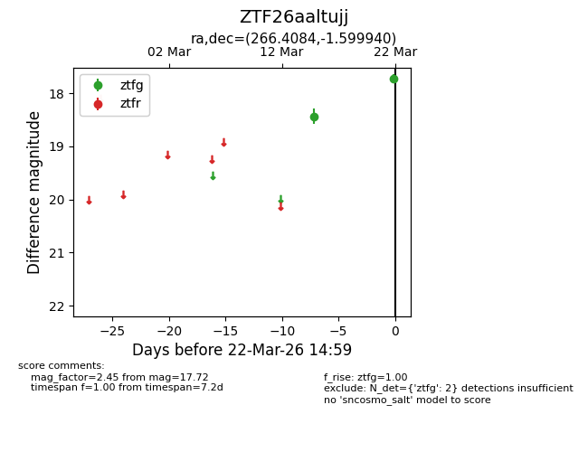
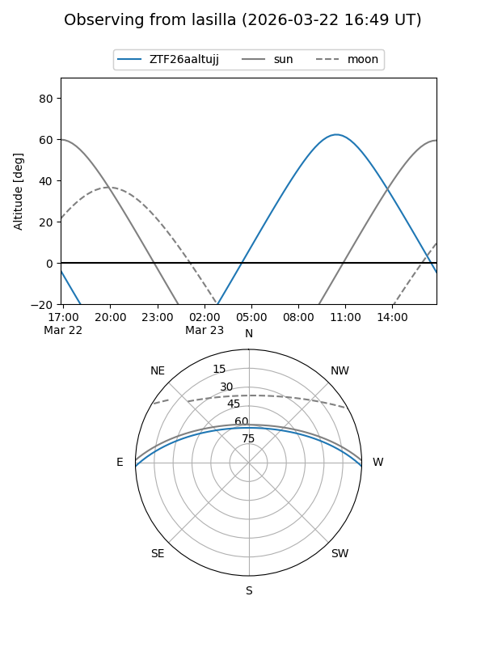
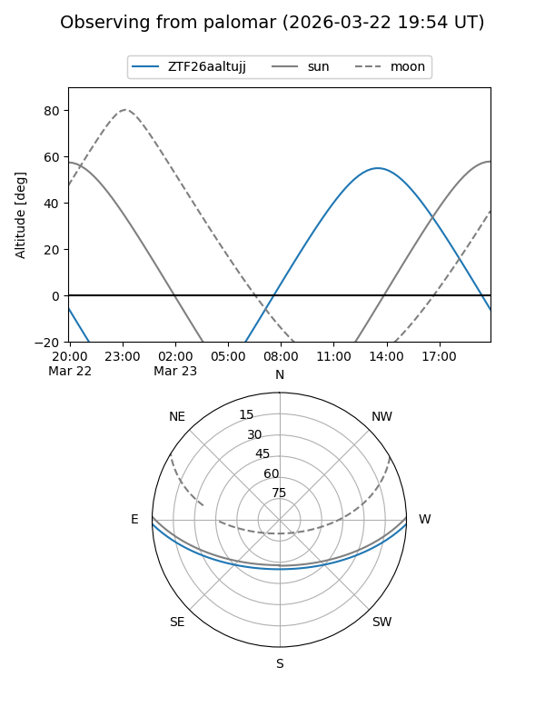

ZTF26aaltujj
Target ZTF26aaltujj at 2026-03-22 15:01
Aliases and brokers:
FINK: link
Lasair: link
ALeRCE: link
alt names
ZTF26aaltujj (ztf,fink_ztf)
Coordinates:
equatorial (ra, dec) = 266.4084,-1.59994
equatorial (HMS+DMS) = 17:45:38.01,-01:35:59.78
galactic (l, b) = (23.8101,+13.84007)
Flags:
Photometry:
last ztfg=17.72
2 ztfg detections
Lightcurve

Visibility


Additional plots